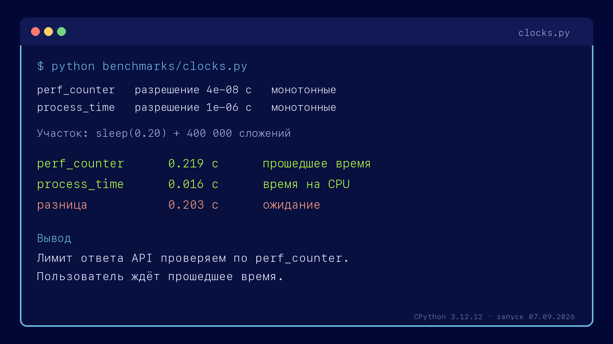
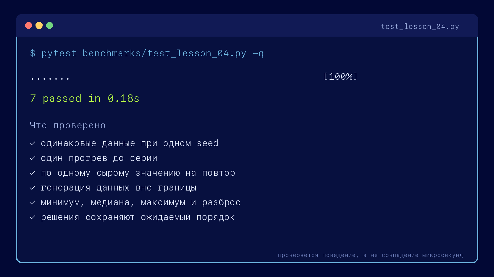
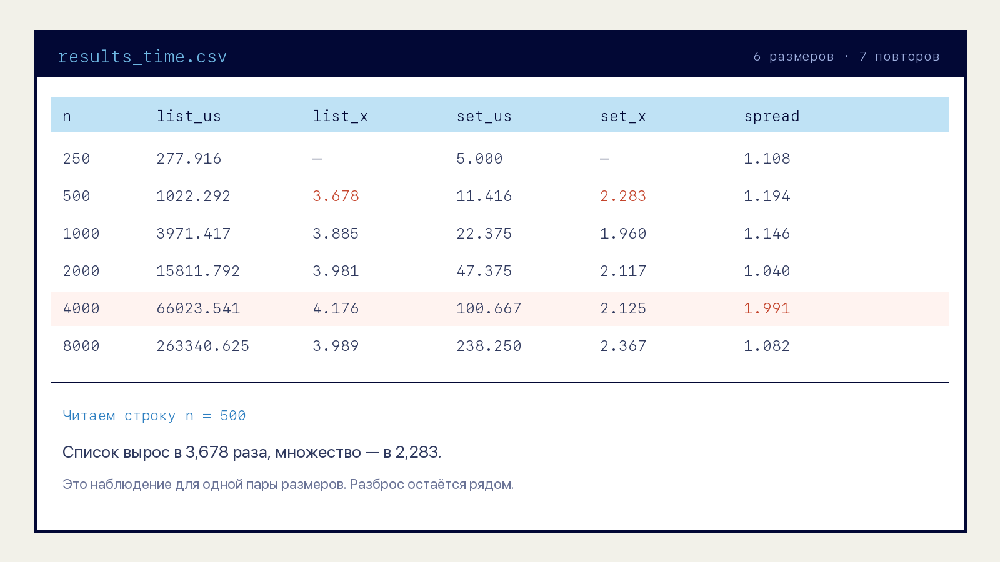
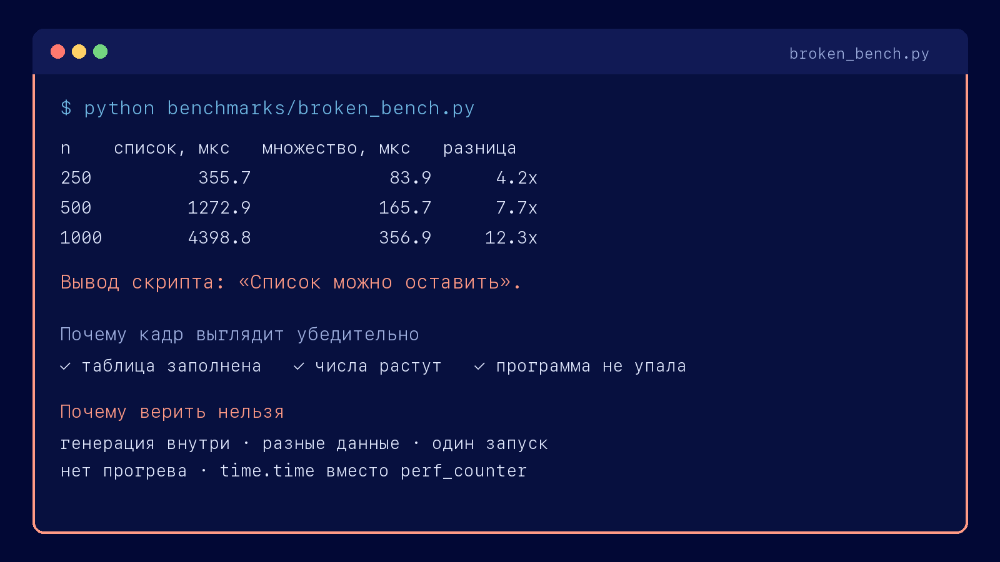

Запись O(n) не говорит, займёт вызов 5 миллисекунд или 5 секунд. Лимит ответа проверяется запуском.
Занятие 4 · алгоритмизация · лаборатория
Практические
замеры времени
и памяти
На прошлом занятии мы считали операции. Теперь проверим две реализации на настоящем запуске и разберём, почему одной цифры недостаточно: результат зависит от границы замера, прогрева, повторов и выбранного агрегата.
27 экранов4 запуска рукамирезультат — свой CSV
Запись № 1 · сверка идентификаторов
Ожидали при удвоении n
для решения O(n²)×4,00
для решения O(n²)×4,00
Получили на замере×3,68
Ожидали при удвоении n
для решения O(n)×2,00
для решения O(n)×2,00
Получили на замере×2,28
Оба результата отличаются от ожидания. Сначала проверим методику, затем объясним расхождение свойствами кода и среды.
Раздел I · лабораторный журнал · запись № 1
Замер не подтвердил ни одно из двух ожиданий
Мы сверяем входящие идентификаторы с реестром. Перебор по списку имеет сложность O(n²), проверка через множество — O(n). При удвоении входа ждём рост примерно в четыре и два раза, но серия дала другие множители.
ЛАБОРАТОРНЫЙ ЖУРНАЛ · ЗАПИСЬ № 1n: 250 → 500 · CPython 3.12.12 · 7 повторов
ожидание
×4,00
Для перебора по списку: работа растёт как n², вход удвоился.
×2,00
Для проверки в множестве: работа растёт как n.
сырые значения
список 250 277,9
список 500 1022,3
множ. 250 5,0
множ. 500 11,4
Микросекунды на вызов, минимум серии из семи повторов.
агрегат
×3,68
1022,3 / 277,9 — список вырос медленнее, чем вчетверо.
×2,28
11,4 / 5,0 — множество выросло быстрее, чем вдвое.
вывод
—
запись открыта
до экрана 18
—
запись открыта
до экрана 18
Вывод пока не пишем. Сначала нужно проверить границу участка, повторяемость серии и способ, которым несколько значений сведены в одно.
Раздел I · зачем измерять, если оценка уже есть
Асимптотика показывает рост, замер — цену запуска
Оценка сложности помогает сравнить рост работы при увеличении входа. Для инженерного решения этого мало: нужны секунды на конкретной машине и байты на конкретных данных.
Реализации одного класса различаются постоянными расходами, обращениями к памяти и стоимостью операций Python.
отвечает замерS(n) = O(n) описывает рост. Для лимита контейнера нужны байты на элемент и пиковое значение.
Рабочая связка: сначала оценка отбрасывает заведомо неподходящий алгоритм, затем замер проверяет реализацию в нужной среде.
Раздел II · прошедшее и процессорное время
Ожидание входит в perf_counter, но не в process_time
Один участок содержит паузу sleep(0.20) и 400 000 сложений. Прошедшее время получилось 0,219 с, процессорное — 0,016 с: во время паузы процесс не выполнялся на CPU.
Как выбрать часы
perf_counter берём для задержки: пользователь ждёт и вычисления, и сеть, и диск.
process_time берём, когда хотим отделить работу процесса от ожидания.

За клавиатуру · разминка · 4 минуты
Запустите часы и объясните разницу
Что сделать
source .venv/bin/activate
python benchmarks/clocks.py- Выпишите значения
perf_counterиprocess_time. - Вычтите одно из другого и объясните, какой участок дал разницу.
- Уберите
sleep(0.20), снова запустите файл и сравните результаты.
Проверка себя
Без sleep значения сблизятся: участок почти целиком состоит из вычислений.
Если разница осталась заметной, повторите запуск. Так мы впервые увидим фоновый шум, ради которого дальше понадобится серия.
04:00
Результат — две цифры и одно объяснение.
Раздел III · граница измерения · демонстрация
Одна и та же программа: от 56 до 1259 микросекунд
Ниже настоящий замер сверки по множеству при n = 4000. Строки кликаются: первый клик ставит начало участка, второй — конец. Число справа пересчитывается по реальным замерам каждой строки, минимум из семи повторов.
bench.py · n = 4000кликните строку, чтобы задать границу
- registry, incoming = make_data(4000)1148,9
- known = set(registry)51,0
- found = 00,1
- for x in incoming:56,3
- if x in known:—
- found += 1—
- print(f"совпадений {found}")2,4
Строки 5 и 6 — тело цикла: их стоимость уже посчитана в строке 4, отдельно она не измеряется. Результат работы: 384 совпадения из 4000 входящих.
Внутри границы
56,3мкс
строки 4–6
Граница поставлена верно. Внутри только сверка. Именно это число сравнивают с 64 682,9 мкс у перебора по списку — разница в 1149 раз.
Раздел III · правило и три промаха
Внутри границы — только исследуемая операция
Граница должна быть одинаковой для всех решений и охватывать только исследуемую операцию. Три типичных ошибки:
Генерация, чтение файла или распаковка попали внутрь участка. Общее большое слагаемое скрывает разницу решений.
симптом: числа почти равныВнутри остался print или assert. Тогда число описывает не только алгоритм и может зависеть от терминала.
У одного решения внутри границы есть построение структуры, у другого — нет. Две верные цифры отвечают на разные вопросы.
симптом: находится чтением кодаМикропример: как третий промах меняет вывод
Только циклы: 56,3 против 64 682,9 мкс — 1149×. Решения вместе с подготовкой структуры: 107,3 против 64 687,1 мкс — 603×. Поэтому границу записывают в отчёте словами.
За клавиатуру · измерительный контур · 10 минут
Соберите проверяемый контур замера
Что написать
make_data(size, seed)— одинаковые данные при одном seed.series(...)— один прогрев и список сырых значений.summarize(...)— минимум, медиана, максимум иmax / min.
pytest course-materials/benchmarks/\
test_lesson_04.py -qТесты проверяют устройство контура, а не совпадение микросекунд: данные должны повторяться, генерация — оставаться снаружи, значений — быть ровно столько, сколько повторов.
10:00
Готово, когда все семь тестов зелёные.

Раздел IV · шум и повторы
Пятнадцать запусков одного и того же кода
Пятнадцать повторов одного вызова дали разные значения, хотя код и вход не менялись. Планировщик, сборщик мусора и фоновые процессы добавляют задержки — поэтому сохраняем всю серию.
ПОВТОР 01микросекунды на вызовПОВТОР 15
минимум15 679,2
Запуск, которому меньше всего помешали. Ближе всего к чистой стоимости кода.
медиана16 013,9
Типичный запуск: половина серии быстрее, половина медленнее. Устойчива к выбросу.
среднее16 145,7
Смещено вверх одним неудачным запуском. Чем длиннее хвост помех, тем сильнее смещение.
максимум16 963,3
Не свойство решения, а свойство момента: в эту миллисекунду машина занималась чем-то ещё.
Разброс max / min = 1,08 — серия спокойная. Если бы получилось 2 и больше, замер надо было бы повторить: на такой машине разница между двумя близкими решениями просто не видна за шумом.
Раздел IV · чем сворачивают серию
Агрегат выбирают под вопрос, а разброс сохраняют всегда
Серия нужна, чтобы отделить устойчивый результат от помех. Одно итоговое число удобно для сравнения, но рядом остаются минимум, медиана и разброс max / min.
| Агрегат | Что показывает | Где полезен | Что проверить рядом |
|---|---|---|---|
| минимум | лучший повтор серии | микробенчмарк и сравнение реализаций | не отличается ли он от остальных слишком сильно |
| медиана | центральный повтор | типичное время вызова | есть ли длинный хвост задержек |
| среднее | среднюю стоимость серии | оценка суммарной нагрузки | не тянут ли результат редкие выбросы |
| максимум | худший повтор этой серии | поиск нестабильности | семи повторов недостаточно для SLA и перцентилей |
В спокойной серии минимум и медиана отличаются на 2%, max / min = 1,08. При n = 4000 разброс вырос до 1,99; такой запуск повторяем и фиксируем условия среды.
Раздел IV · первый вызов
Первый вызов не включаем в рабочую серию
Без прогрева первый вызов занял 72,7 мкс, минимум следующих девяти — 45,7 мкс. На первый повтор влияют холодные кэши и состояние аллокатора, поэтому его выполняем заранее.
| Что оплачивает первый вызов | мкс |
|---|---|
| первый вызов, всё вместе | 72,7 |
| минимум следующих девяти | 45,7 |
| медиана следующих девяти | 50,6 |
| разовая надбавка | 27,0 |
Что делает прогрев
Мы один раз вызываем ту же функцию до отсчёта. После этого запускаем серию на одинаковых данных и сохраняем каждый результат.
Прогрев не устраняет все помехи и не гарантирует одинаковые цифры. Он убирает один известный источник различий — особенность первого вызова.
В контуре используется короткий вход: func(registry[:32], incoming[:32]). Рабочая серия после него остаётся отдельной.
Раздел V · память
Для лимита нужна пиковая дополнительная память
Список, который решение получило в аргументах. Он существовал до вызова, поэтому в S(n) не входит и в замер не попадает.
создаётся до старта трассировкиМножество, словарь, копия списка, кадры стека у рекурсии. Ровно эта величина и называется S(n).
её мы измеряемСнимок на момент замера. Зависит от того, что уже успел освободить сборщик мусора, поэтому как характеристика решения ненадёжна.
tracemalloc, первое числоНаибольшее значение, которого достигала дополнительная память внутри границы. По ней подбирают лимит контейнера.
tracemalloc, второе числоtracemalloc считает выделения Python внутри трассируемого участка. Это не RSS всего процесса: память интерпретатора и часть выделений расширений на C в число не входят. Поэтому в отчёте называем и прибор, и измеряемую границу.
Раздел V · результат замера
Список растёт ровно, множество — ступенями
Пиковая дополнительная память двух решений, тот же tracemalloc, отдельный запуск. У копии списка ровно 8 байт на указатель плюс заголовок; у множества картина другая, и её стоит разобрать.
nкопия спискабайтмножествобайт
5004 51241 264
10008 51241 264
200016 512164 144
400032 512164 144
800064 512655 664
На элемент: у списка 9,0 → 8,1 байта, у множества скачет между 82,5 и 41,0. Отношение множество / список гуляет от 4,85× до 10,16× в зависимости от того, где мы оказались между ступенями.
Ступени берутся из устройства хеш-таблицы: когда заполнение доходит до порога, таблица перестраивается сразу на вчетверо больший размер. До следующего порога пик не меняется вообще — поэтому при n = 500 и n = 1000 множество занимает одинаковые 41 264 байта. Асимптотически это по-прежнему O(n), но «в среднем по ступеньке».
Раздел V · размен время / память
При n = 8000 множество быстрее, но требует больше памяти
В этой серии множество выиграло у списка 1105 раз по времени и потребовало 10,2 раза больше пиковой дополнительной памяти: 655 664 байта против 64 512.
По одной точке нельзя линейно переносить число на вход в тысячу раз больше: хеш-таблица растёт ступенями. Для нового диапазона проводим отдельную серию и проверяем лимит памяти.
Как это звучит на секции
Для этого диапазона беру множество: время растёт ближе к O(n), а замер на n = 8000 показал выигрыш 1105×. Цена — 655 664 байта пиковой дополнительной памяти. Перед переносом на больший вход повторю замер.
В ответе есть диапазон данных, измеренный выигрыш, цена по памяти и условие повторной проверки.
За клавиатуру · своя серия · 7 минут
Запустите серию и прочитайте свой CSV
Что сделать
python benchmarks/lab.py
python benchmarks/lab.py --raw 2000
python benchmarks/memory_probe.py- Откройте
results_time.csv. - Для каждой пары размеров сравните
list_growthиset_growth. - Найдите строку с наибольшим
spread.
Ваши микросекунды будут другими. Проверяем форму роста и разброс, а не совпадение с экраном.
07:00
Результат — одна прочитанная строка CSV и один вопрос к ней.

Раздел VI · серия целиком
Шесть размеров входа, минимум и медиана рядом
| n | список, мкс | медиана | множество, мкс | разброс | во сколько раз | |
|---|---|---|---|---|---|---|
| 250 | 277,9 | 279,6 | 5,0 | 1,11 | 56 | |
| 500 | 1 022,3 | 1 132,6 | 11,4 | 1,19 | 90 | |
| 1000 | 3 971,4 | 4 144,8 | 22,4 | 1,15 | 178 | |
| 2000 | 15 811,8 | 16 001,9 | 47,4 | 1,04 | 334 | |
| 4000 | 66 023,5 | 67 365,5 | 100,7 | 1,99 | 656 | |
| 8000 | 263 340,6 | 274 825,6 | 238,2 | 1,08 | 1105 |
Столбец разброса — не украшение: серия при n = 4000 показала 1,99, то есть самый медленный повтор оказался вдвое дольше самого быстрого. При этом минимум и медиана разошлись всего на 2%: выброс был один, и минимум его пережил. Именно поэтому в таблицу идёт минимум, а разброс сохраняется рядом — чтобы читающий видел, насколько этому числу верить.
Раздел VI · те же числа на графике
На логарифмических осях степень видна как наклон
Обе оси логарифмические, поэтому степенная зависимость рисуется прямой, а показатель степени превращается в её наклон. Читать такой график проще, чем таблицу: наклон 2 — квадратичный рост, наклон 1 — линейный.
Что даёт наклон
Список: от 250 до 8000 время выросло в 947,6 раза при росте входа в 32 раза. Наклон = log₂947,6 / log₂32 = 1,98 — практически ровно 2.
Множество: 47,6 раза при тех же 32. Наклон = 1,12 — заметно больше единицы, и это ровно та надбавка, которую видно в множителях.
results_time.csvминимум серии, мкс
Раздел VI · лабораторный журнал · запись № 1 закрыта
Обе причины названы, поле «вывод» заполняется
ЛАБОРАТОРНЫЙ ЖУРНАЛ · ЗАПИСЬ № 1 · ЗАКРЫТАn: 250 → 500 · 6 размеров входа · наклон 1,98 и 1,12
ожидание
×4,00
Ожидание относится к старшему слагаемому, а не ко всему времени запуска.
промах вниз: ×3,68
Кроме квадратичного цикла есть копирование list(registry) и постоянные расходы.
С ростом n их доля падает, поэтому множитель приближается к 4: 3,68 → 3,99.
промах вверх: ×2,28
O(1) в среднем не обещает одинаковое число наносекунд: таблица перестраивается ступенями, меняется работа кэша.
На измеренном диапазоне это дало наклон 1,12. Причину можно подтвердить только отдельным экспериментом.
вывод
Оценка описывает порядок роста. Замер показывает время целиком на выбранных n.
Расхождение — повод проверить методику и построить гипотезу, а не объявлять ошибку.
Порядок работы: проверить границу, прогрев, повторы и разброс; затем объяснять расхождение свойствами кода и среды.
За клавиатуру · чужой замер · 7 минут
Найдите пять дефектов рабочего замера
Найдите пять дефектов
- Запустите файл и зафиксируйте его вывод.
- Найдите: границу, данные, прогрев, повторы и часы.
- Объясните, почему 12,3× нельзя сравнивать с честными 177,5×.
Подсказка: число совпадений у решений различается. Значит, им передали разные данные и сравнение уже потеряло общий вход.
07:00
Ответ — пять строк «дефект → искажение → исправление».

Контроль · приёмка чужой методики · 7 минут
Принять или вернуть отчёт другой группы
Отчёт на приёмку · peer_review_report.md
Методика. Запустили оба решения, засекли время секундомером телефона, взяли среднее из двух запусков. Данные для каждого решения сгенерировали заново, чтобы замер был честным. Измеряли на n = 100, чтобы дождаться результата. Среда. Ноутбук, Python. решение запуск 1 запуск 2 среднее список 0.4 0.9 0.65 множество 0.3 0.5 0.40 Вывод. Множество быстрее примерно в полтора раза. Разница небольшая, можно оставить список. На больших данных всё будет так же.
Четыре пункта ответа
- Назвать дефекты контура и поле паспорта у каждого.
- Сказать, какой из них исказил число сильнее прочих.
- Переписать вывод так, чтобы он следовал из тех данных, которые есть.
- Назвать замер, которым исходный вывод можно проверить.
Приёмка засчитывается, если названо не меньше пяти дефектов и переписанный вывод не выходит за пределы n = 100.
07:00
Ответ даёт группа, которая отчёт не писала.
Раздел VII · как звучит результат
Хороший вывод можно повторить и проверить
на чём измерено
Какие данные и какие размеры входа. Без этого вывод нельзя ни повторить, ни ограничить.
что получилось
Во сколько раз и по какой метрике. «Быстрее» без числа и без метрики — не результат.
как измерено
Часы, граница, прогрев, повторы, агрегат. Одна строка, но без неё числу верить нельзя.
чего вывод не касается
Размеры входа, данные и машины, на которых не проверяли. Их называют явно.
На пакетах из 250–8000 идентификаторов сверка через множество оказалась от 56 до 1105 раз быстрее перебора по списку по минимуму серии из семи повторов; измерено perf_counter с прогревом, генерация данных вынесена за границу; вывод не распространяется на пакеты меньше 250 элементов, на данные с другим распределением совпадений и на машины с другим объёмом кэша.
Фразы «множество работает быстрее» недостаточно: в ней нет диапазона входа, метрики, условий запуска и границы применимости.
Справка · проходится по своему коду до первого числа
Десять проверок перед первым числом
Данные созданы до отсчёта и одинаковы для всех решений
Внутри границы только исследуемая операция: без генерации, печати и проверок
Часы монотонные: perf_counter, а не time
Перед серией сделан прогрев, и его значение в серию не попало
Повторов не меньше семи, все сырые значения сохранены
В отчёте есть минимум, медиана и разброс max / min
Размеров входа не меньше четырёх, и они растут кратно
Память измерена отдельным запуском, не одновременно со временем
Названа среда: версия Python, машина, режим питания
Назван размер входа, при котором вывод перестаёт действовать
Паспорт эксперимента добавляет к этому списку вопрос, гипотезу и ограничения вывода. Полный шаблон остаётся в METHOD.md.
Итог · проверяем формулировки
Шесть выводов, которые замер не подтверждает
Измерено шесть точек, а O(n) — утверждение обо всех n. Замер согласуется с оценкой или расходится с ней, но не доказывает.
Пятнадцать повторов дали разброс 1,08, а серия при n = 4000 — 1,99. По одному значению нельзя оценить стабильность.
Минимум удобен для микробенчмарка, медиана — для типичного вызова, максимум — для поиска нестабильности. Рядом сохраняем разброс.
В broken_bench.py данные генерировались заново для каждого решения: 98 совпадений против 101 на «одинаковых» входах.
Пик множества стоит на месте от n = 500 до n = 1000 и прыгает вчетверо при перестройке таблицы: 41 264 → 164 144.
Получилось 3,68 и 2,28. Оценка описывает старшее слагаемое, а замер — всё время целиком.
Вопрос на выход
Коллега прислал число: «решение работает 40 миллисекунд».
Какие четыре вопроса вы зададите до того, как ему поверить?
Ответ засчитывается, если названы граница участка, число повторов и агрегат, размер входа и среда. Пятым можно спросить про разброс — тогда сразу видно, стоит ли обсуждать остальное.
Фиксация · что уходит в репозиторий
В коммит идут сырые значения, а не один коэффициент
Итоговое «в 178 раз быстрее» проверить нельзя: по нему не видно ни границы, ни повторов, ни разброса. Поэтому в репозиторий кладётся то, из чего это число получено.
benchmarks/артефакт занятия
benchmarks/
├── contour.py заполненный бланк контура
├── results_time.csv сырые серии со своими числами
├── chart.svg график «размер входа — время»
└── README.md паспорт по METHOD.mdGit по КТП
Issue measurement-baseline: вопрос и гипотеза, записанные до первого запуска.
Ветка lesson-04, коммит с заполненным contour.py и своим CSV.
Pull Request с паспортом эксперимента в описании: одиннадцать полей, раздел «ограничения» обязателен.
Review: один комментарий по чужой методике по чек-листу контура. Не «согласен», а конкретный пункт, который в чужом отчёте не закрыт.
Домашнее задание № 4 · к следующему занятию
Максим Николаевич не хочет задавать домашнее задание. Но очень хочет
- ①Проверить свою прикидку из ДЗ № 3
Вы считали, сколько сравнений сделает
two_sumперебором при n = 100 000. Теперь измерьте своим контуром на четырёх размерах входа и скажите, сошлась прикидка или нет. - ②Собрать паспорт эксперимента
Одиннадцать полей по
METHOD.md. Раздел «ограничения» — не формальность: назовите размер входа, дальше которого ваш вывод не действует. - ③Ответить на вопрос, который не разбирался
Замерьте память обеих версий
two_sumи скажите, при каком лимите контейнера пришлось бы вернуться к перебору. Расчётом, без подбора.

Домашнее задание № 4 · порядок сдачи
Куда положить и как сдать
Файлы
benchmarks/ в личном репозитории: contour.py, results_time.csv, README.md с паспортом.
Ветка и PR
Ветка hw-04, коммит с содержательным сообщением, Pull Request в собственную main.
Срок
До начала занятия 5. Один коэффициент без сырых значений не принимается.
Критерии
Одиннадцать полей паспорта, четыре размера входа, разброс в каждой серии, названные ограничения.
Про ИИ: замер, паспорт и ограничения пишете сами — в этом и состоит задание. Оформление .md и причёсывание формулировок можно поручить модели. Я сам так делаю всегда, поэтому и вам запрещать не буду. Содержание должно остаться вашим: методику вы будете защищать на приёмке.